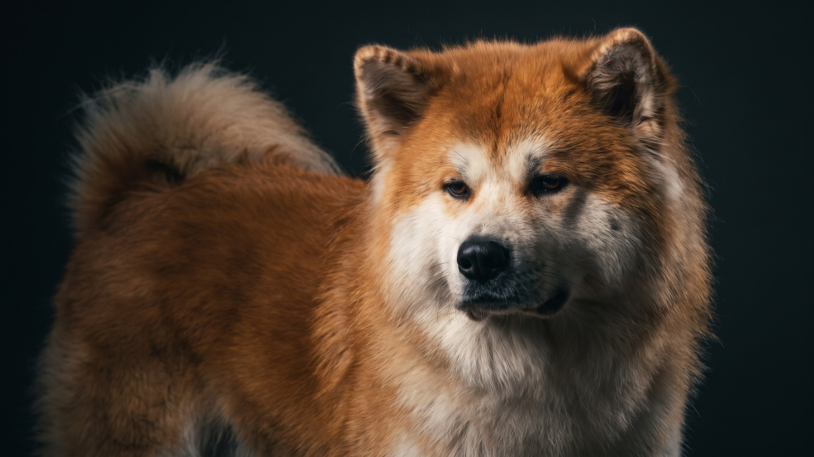

Американскую акиту часто путают с акита-ину, но это разные породы. Американская крупнее, тяжелее, с широкой медвежьей головой и окрасом самых разных вариантов, включая пятнистый. Характер у неё под стать внешности: собственное мнение, сдержанность с чужими и преданность своим. Если вы выбираете эту породу, стоит знать, с чем придётся работать каждый день.
🐾 У вас американская акита?
AnimaLife соберёт уход под породу: к каким болезням есть склонность, что проверять по возрасту, чем кормить и когда пора к врачу. Бесплатно, прямо в мессенджере.
Собрать план ухода → Собрать в MAX →
У вас iPhone? AnimaLife есть в App Store
Американская акита не ищет одобрения на каждый шаг. Она сначала думает, решает сама и только потом смотрит на вас. Это не каприз. Так веками работали охранные собаки, которых заводили сторожить и соображать в одиночку. Со своими акита мягкая и привязчивая, с чужими сразу держит дистанцию.
К другим собакам она относится с подозрением, особенно к однополым. Кошку или мелкого зверя примет, если росла с ними бок о бок. А вот чужую собаку во дворе воспримет как вызов и проверит охранный инстинкт в деле.
Американская акита подходит тем, кто уже держал крупных собак с сильным характером и понимает, что такое настойчивое воспитание без конфликта. Она хороша для семьи с детьми школьного возраста, которые умеют вести себя с большой собакой.
Шерсть американской акиты плотная, с развитым подшёрстком. Два раза в год, весной и осенью, она линяет так, что шерсть собирается по всей квартире клочьями. В период линьки вычёсывание нужно каждый день: пуходёрка и расчёска с вращающимися зубьями справляются лучше щётки. В остальное время хватает двух-трёх вычёсываний в неделю.
Купают американскую акиту редко, по мере загрязнения. Шерсть обладает самоочищающимся эффектом, и частое мытьё нарушает структуру подшёрстка. После купания нужна тщательная сушка феном, иначе подшёрсток долго остаётся влажным и может давать запах.
Гулять с акитой нужно дважды в день, минимум по 40-50 минут. Круги по двору на поводке не считаются. Меняйте маршруты, давайте нюхать и исследовать, подбрасывайте задачки для головы: послушание, поиск по запаху, занятия с инструктором. Тело и мозг собака должна нагружать поровну.
Социализировать щенка начинают сразу после прививок. Водите его на улицы и в людные места, знакомьте с собаками разного размера. Акита, выросшая взаперти во дворе, в городе становится неуправляемой. А правила держите одни и те же каждый день, без поблажек «сегодня можно».
Материал носит информационный характер и не заменяет очную консультацию ветеринара.
🐾 Ваш питомец — американская акита?
Заведите профиль в AnimaLife: приложение запомнит породу, возраст и вес и будет подсказывать по уходу именно для неё. Вопросы AI-ветеринару — круглосуточно и бесплатно.
Завести профиль → Завести в MAX →
У вас iPhone? AnimaLife есть в App Store
🐾 Понравился разбор?
Подпишитесь на канал — каждый день разбираем по одному тревожному симптому у кошек и собак: что в пределах нормы, а когда пора к врачу. Подпишитесь, чтобы не пропустить разбор, который может спасти здоровье вашего питомца.